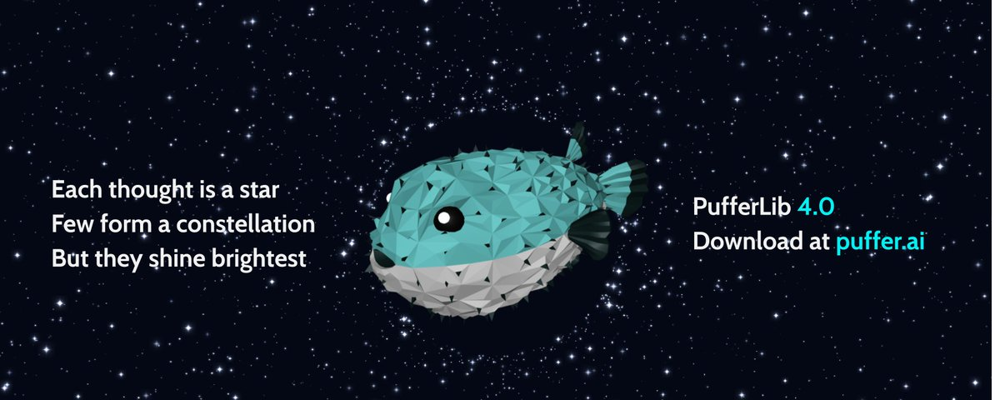
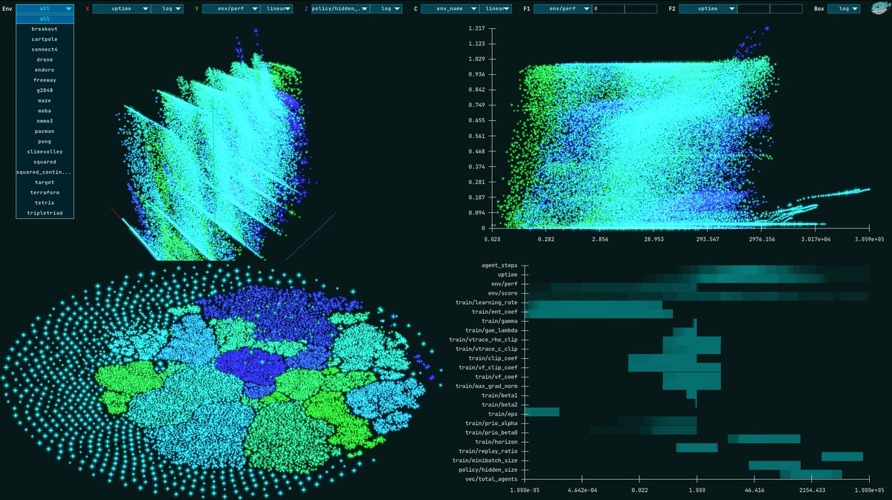
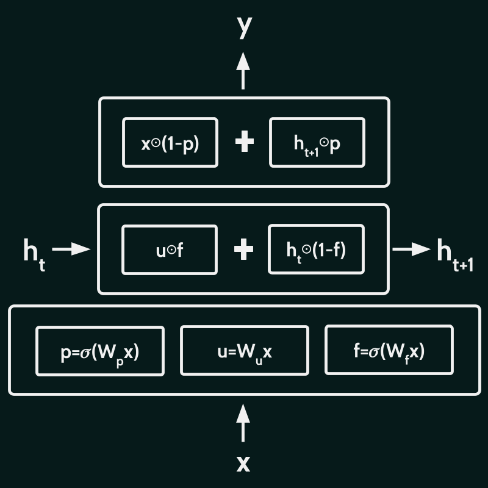

PufferLib 4.0

PufferLib is an fast and sane reinforcement learning library. This update solves most baseline environments 3-5x faster on average. We'll be releasing articles with details all week. For now, here are the highlights:
We replaced Torch with 5,000 lines of deterministic CUDA-C
Torch is still available as a fallback and for quicker prototyping, but our main training implementation in Puffer 4 is raw CUDA. It is capable of training our standard model at 15M steps per second and smaller models at over 20M steps per second on a single RTX 5090, up from 3-5M in Puffer 3.
Constellation Visualizes 20,000 Experiments

We wrote our own aggregate experiment visualizer in C. It can handle 100k points at 60 FPS locally and is easy to embed online. Play with the baselines from this release now at puffer.ai.
MinGRU + Highway connections is a hardware-efficient upgrade to LSTMs
MinGRU replaces LSTM as our core RNN. It parallelizable over the time dimension during training, which lets us train on longer sequences. We use highway connections instead of traditional normalization between layers. This lets us scale the model both larger and smaller than in Puffer 3 while retaining hardware efficiency.
